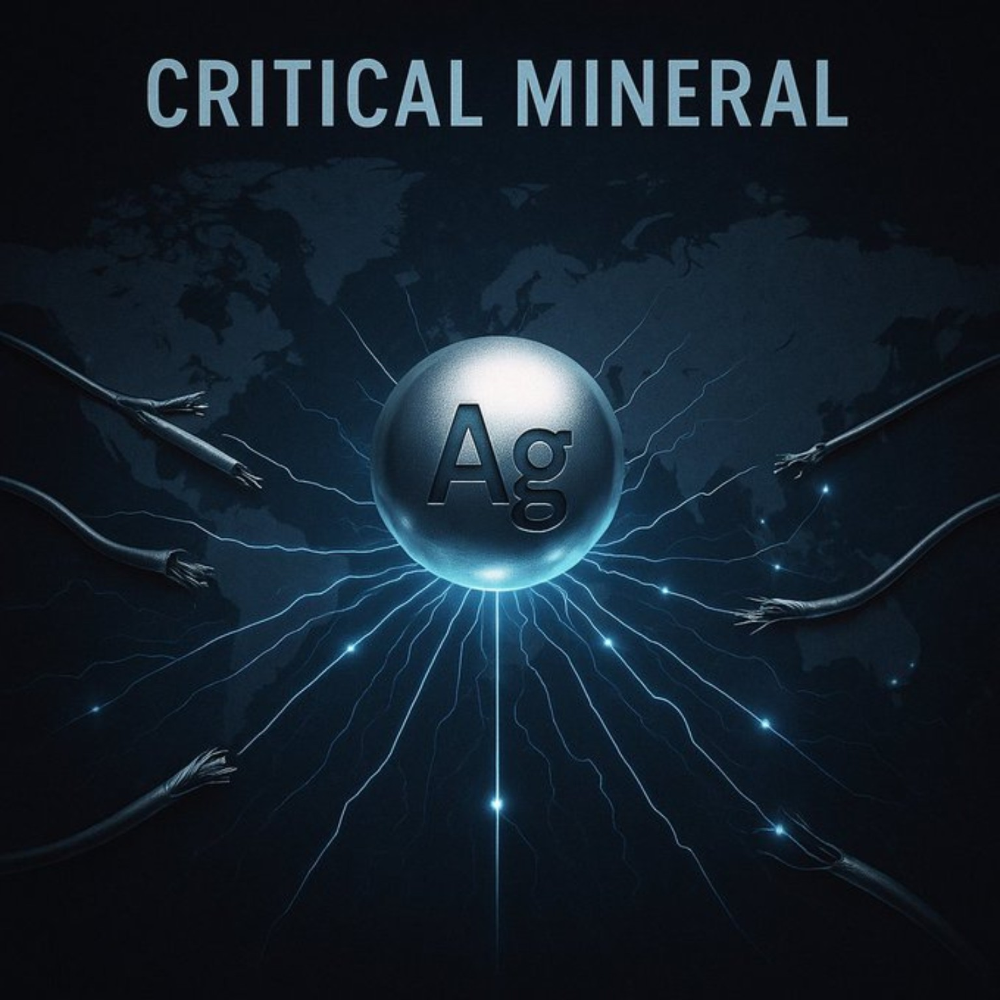

Silver is a precious metal known for its brilliant luster, exceptional electrical conductivity, and long-standing cultural significance. It has been valued for currency, ornamentation, medicine, and technology for thousands of years.
Physical & Chemical Properties
Modern Uses & Investment
- Electronics and electrical contacts
- Solar panels and photovoltaics
- Jewelry, coins, and bullion
- Medical and antimicrobial applications
- Photography (historically)
Historical Significance
Silver has been mined and used since antiquity, appearing in early civilizations such as Mesopotamia, Egypt, Greece, and Rome. It formed the basis of many monetary systems and influenced global trade for centuries.
Silver as a Critical Mineral
In the modern world, silver is increasingly recognized as a critical mineral. Its unmatched conductivity makes it essential to green energy, advanced electronics, and national infrastructure. This dual role — industrial necessity and monetary metal — gives silver a unique strategic importance.
